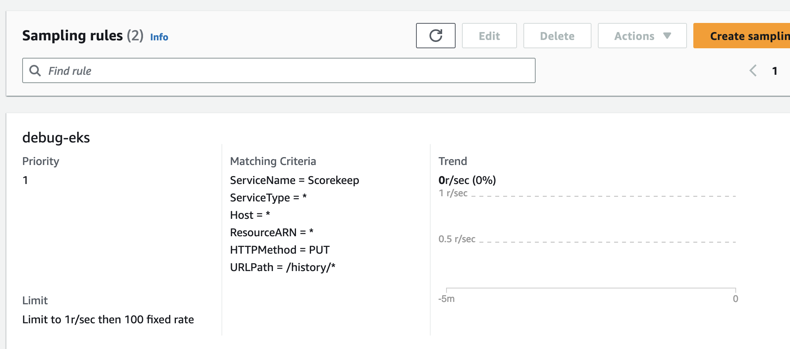

We've Moved to the AWS Docs! 🚀
This content has been updated and relocated to improve your experience. Please visit our new site for the latest version: AWS EKS Best Practices Guide on the AWS Docs
Bookmarks and links will continue to work, but we recommend updating them for faster access in the future.
date: 2023-09-29 authors: - Rachel Leekin - Nirmal Mehta
Cost Optimization - Observability¶
Introduction¶
Observability tools help you efficiently detect, remediate and investigate your workloads. The cost of telemetry data naturally increases as your use of EKS increases. At times, it can be challenging to balance your operational needs and measuring what matters to your business and keeping observability costs in check. This guide focuses on cost optimization strategies for the three pillars of observability: logs, metrics and traces. Each of these best practices can be applied independently to fit your organization's optimization goals.
Logging¶
Logging plays a vital role in monitoring and troubleshooting the applications in your cluster. There are several strategies that can be employed to optimize logging costs. The best practice strategies listed below include examining your log retention policies to implement granular controls on how long log data is kept, sending log data to different storage options based on importance, and utilizing log filtering to narrow down the types of logs messages that are stored. Efficiently managing log telemetry can lead to cost savings for your environments.
EKS Control Plane¶
Optimize Your Control Plane Logs¶
The Kubernetes control plane is a set of components that manage the clusters and these components send different types of information as log streams to a log group in Amazon CloudWatch. While there are benefits to enabling all control plane log types, you should be aware of the information in each log and the associated costs to storing all the log telemetry. You are charged for the standard CloudWatch Logs data ingestion and storage costs for logs sent to Amazon CloudWatch Logs from your clusters. Before enabling them, evaluate whether each log stream is necessary.
For example, in non-production clusters, selectively enable specific log types, such as the api server logs, only for analysis and deactivate afterward. But for production clusters, where you might not be able to reproduce events, and resolving issues requires more log information, then you can enable all log types. Further control plane cost optimization implementation details are in this blog post.
Stream Logs to S3¶
Another cost optimization best practice is streaming control plane logs to S3 via CloudWatch Logs subscriptions. Leveraging CloudWatch Logs subscriptions allows you to selectively forward logs to S3 which provides more cost efficient long term storage compared to retaining logs indefinitely in CloudWatch. For example, for production clusters, you can create a critical log group and leverage subscriptions to stream these logs to S3 after 15 days. This will ensure you have have quick access to the logs for analysis but also save on cost by moving logs to a more cost efficient storage.
Attention
As of 9/5/2023 EKS logs are classified as Vended Logs in Amazon CloudWatch Logs. Vended Logs are specific AWS service logs natively published by AWS services on behalf of the customer and available at volume discount pricing. Please visit the Amazon CloudWatch pricing page to learn more about Vended Logs pricing.
EKS Data Plane¶
Log Retention¶
Amazon CloudWatch's default retention policy is to keep logs indefinitely and never expire, incurring storage costs applicable to your AWS region. In order to reduce the storage costs, you can customize the retention policy for each log group based on your workload requirements.
In a development environment, a lengthy retention period may not be necessary. But in a production environment, you can set a longer retention policy to meet troubleshooting, compliance, and capacity planning requirements. For example, if you are running an e-commerce application during the peak holiday season the system is under heavier load and issues can arise that may not be immediately noticeable, you will want to set a longer log retention for detailed troubleshooting and post event analysis.
You can configure your retention periods in the AWS CloudWatch console or AWS API with the duration from 1 day to 10 years based on each log group. Having a flexible retention period can save log storage costs, while also maintaining critical logs.
Log Storage Options¶
Storage is a large driver of observability costs therefore it is crucial to optimize your log storage strategy. Your strategies should align with your workloads requirements while maintaining performance and scalability. One strategy to reduce the costs of storing logs is to leverage AWS S3 buckets and its different storage tiers.
Forward logs directly to S3¶
Consider forwarding less critical logs, such as development environments, directly to S3 instead of Cloudwatch. This can have an immediate impact on log storage costs. One option is to forward the logs straight to S3 using Fluentbit. You define this in the [OUTPUT] section, the destination where FluentBit transmits container logs for retention. Review additional configurations parameter here.
[OUTPUT]
Name eks_to_s3
Match application.*
bucket $S3_BUCKET name
region us-east-2
store_dir /var/log/fluentbit
total_file_size 30M
upload_timeout 3m
Forward logs to CloudWatch only for short term analysis¶
For more critical logs, such as a production environments where you might need to perform immediate analysis on the data, consider forwarding the logs to CloudWatch. You define this in the [OUTPUT] section, the destination where FluentBit transmits container logs for retention. Review additional configurations parameter here.
[OUTPUT]
Name eks_to_cloudwatch_logs
Match application.*
region us-east-2
log_group_name fluent-bit-cloudwatch
log_stream_prefix from-fluent-bit-
auto_create_group On
However, this will not have an instant affect on your cost savings. For additional savings, you will have to export these logs to Amazon S3.
Export to Amazon S3 from CloudWatch¶
For storing Amazon CloudWatch logs long term, we recommend exporting your Amazon EKS CloudWatch logs to Amazon Simple Storage Service (Amazon S3). You can forward the logs to Amazon S3 bucket by creating an export task via the Console or the API. After you have done so, Amazon S3 presents many options to further reduce cost. You can define your own Amazon S3 Lifecycle rules to move your logs to a storage class that a fits your needs, or leverage the Amazon S3 Intelligent-Tiering storage class to have AWS automatically move data to long-term storage based on your usage pattern. Please refer to this blog for more details. For example, for your production environment logs reside in CloudWatch for more than 30 days then exported to Amazon S3 bucket. You can then use Amazon Athena to query the data in Amazon S3 bucket if you need to refer back to the logs at a later time.
Reduce Log Levels¶
Practice selective logging for your application. Both your applications and nodes output logs by default. For your application logs, adjust the log levels to align with the criticality of the workload and environment. For example, the java application below is outputting INFO logs which is the typical default application configuration and depending on the code can result in a high volume of log data.
import org.apache.log4j.*;
public class LogClass {
private static org.apache.log4j.Logger log = Logger.getLogger(LogClass.class);
public static void main(String[] args) {
log.setLevel(Level.INFO);
log.debug("This is a DEBUG message, check this out!");
log.info("This is an INFO message, nothing to see here!");
log.warn("This is a WARN message, investigate this!");
log.error("This is an ERROR message, check this out!");
log.fatal("This is a FATAL message, investigate this!");
}
}
In a development environment, change your log level to DEBUG, as this can help you debug issues or catch potential ones before they get into production.
In a production environment, consider modifying your log level to ERROR or FATAL. This will output log only when your application has errors, reducing the log output and help you focus on important data about your application status.
You can fine tune various Kubernetes components log levels. For example, if you are using Bottlerocket as your EKS Node operating system, there are configuration settings that allow you to adjust the kubelet process log level. A snippet of this configuration setting is below. Note the default log level of 2 which adjusts the logging verbosity of the kubelet process.
[settings.kubernetes]
log-level = "2"
image-gc-high-threshold-percent = "85"
image-gc-low-threshold-percent = "80"
For a development environment, you can set the log level greater than 2 in order to view additional events, this is good for debugging. For a production environment, you can set the level to 0 in order to view only critical events.
Leverage Filters¶
When using a default EKS Fluentbit configuration to send container logs to Cloudwatch, FluentBit captures and send ALL application container logs enriched with Kubernetes metadata to Cloudwatch as shown in the [INPUT] configuration block below.
[INPUT]
Name tail
Tag application.*
Exclude_Path /var/log/containers/cloudwatch-agent*, /var/log/containers/fluent-bit*, /var/log/containers/aws-node*, /var/log/containers/kube-proxy*
Path /var/log/containers/*.log
Docker_Mode On
Docker_Mode_Flush 5
Docker_Mode_Parser container_firstline
Parser docker
DB /var/fluent-bit/state/flb_container.db
Mem_Buf_Limit 50MB
Skip_Long_Lines On
Refresh_Interval 10
Rotate_Wait 30
storage.type filesystem
Read_from_Head ${READ_FROM_HEAD}
The [INPUT] section above is ingesting all the container logs. This can generate a large amount of data that might not be necessary. Filtering out this data can reduce the amount of log data sent to CloudWatch therefore reducing your cost. You can apply a filter to you logs before it outputs to CloudWatch. Fluentbit defines this in the [FILTER] section. For example, filtering out the Kubernetes metadata from being appended to log events can reduce your log volume.
[FILTER]
Name nest
Match application.*
Operation lift
Nested_under kubernetes
Add_prefix Kube.
[FILTER]
Name modify
Match application.*
Remove Kube.<Metadata_1>
Remove Kube.<Metadata_2>
Remove Kube.<Metadata_3>
[FILTER]
Name nest
Match application.*
Operation nest
Wildcard Kube.*
Nested_under kubernetes
Remove_prefix Kube.
Metrics¶
Metrics provide valuable information regarding the performance of your system. By consolidating all system-related or available resource metrics in a centralized location, you gain the capability to compare and analyze performance data. This centralized approach enables you to make more informed strategic decisions, such as scaling up or scaling down resources. Additionally, metrics play a crucial role in assessing the health of resources, allowing you to take proactive measures when necessary. Generally observability costs scale with telemetry data collection and retention. Below are a few strategies you can implement to reduce the cost of metric telemetry: collecting only metrics that matter, reducing the cardinality of your telemetry data, and fine tuning the granularity of your telemetry data collection.
Monitor what matters and collect only what you need¶
The first cost reduction strategy is to reduce the number of metrics you are collecting and in turn, reduce retention costs.
- Begin by working backwards from your and/or your stakeholder's requirements to determine the metrics that are most important. Success metrics are different for everyone! Know what good looks like and measure for it.
- Consider diving deep into the workloads you are supporting and identifying its Key Performance Indicators (KPIs) a.k.a 'Golden Signals'. These should align to business and stake-holder requirements. Calculating SLIs, SLOs, and SLAs using Amazon CloudWatch and Metric Math is crucial for managing service reliability. Follow the best practices outlined in this guide to effectively monitor and maintain the performance of your EKS environment.
- Then continue through the different layers of infrastructure to connect and correlate EKS cluster, node and additional infrastructure metrics to your workload KPIs. Store your business metrics and operational metrics in a system where you can correlate them together and draw conclusions based on observed impacts to both.
- EKS exposes metrics from the control plane, cluster kube-state-metrics, pods, and nodes. The relevance of all these metrics is dependent on your needs, however it's likely that you will not need every single metric across the different layers. You can use this EKS essential metrics guide as a baseline for monitoring the overall health of an EKS cluster and your workloads.
Here is an example prometheus scrape config where we are using the relabel_config to keep only kubelet metrics and metric_relabel_config to drop all container metrics.
kubernetes_sd_configs:
- role: endpoints
namespaces:
names:
- kube-system
bearer_token_file: /var/run/secrets/kubernetes.io/serviceaccount/token
tls_config:
insecure_skip_verify: true
relabel_configs:
- source_labels: [__meta_kubernetes_service_label_k8s_app]
regex: kubelet
action: keep
metric_relabel_configs:
- source_labels: [__name__]
regex: container_(network_tcp_usage_total|network_udp_usage_total|tasks_state|cpu_load_average_10s)
action: drop
Reduce cardinality where applicable¶
Cardinality refers to the uniqueness of the data values in combination with its dimensions (eg. prometheus labels) for a specific metrics set. High cardinality metrics have many dimensions and each dimension metric combination has higher uniqueness. Higher cardinality results in larger metric telemetry data size and storage needs which increases cost.
In the high cardinality example below, we see that the Metric, Latency, has Dimensions, RequestID, CustomerID, and Service and each Dimension has many unique values. Cardinality is the measure of the combination of the number of possible values per Dimension. In Prometheus, each set of unique dimensions/labels are consider as a new metric, therefore high cardinality means more metrics.

In EKS environments with many metrics and dimensions/labels per metric (Cluster, Namespace, Service, Pod, Container, etc), the cardinality tends to grow. In order to optimize cost, consider the cardinality of the metrics you are collecting carefully. For example, if you are aggregating a specific metric for visualization at the cluster level, then you can drop additional labels that are at a lower layer such as the namespace label.
In order to identify high cardinality metrics in prometheus you can run the following PROMQL query to determine which scrape targets have the highest number of metrics (cardinality):
and the following PROMQL query can help you determine which scrape targets have the highest metrics churn (how many new metrics series were created in a given scrape) rates :
If you are using grafana you can use Grafana Lab's Mimirtool to analyze your grafana dashboards and prometheus rules to identify unused high-cardinality metrics. Follow this guide on how to use the mimirtool analyze and mimirtool analyze prometheus commands to identify active metrics which are not referenced in your dashboards.
Consider metric granularity¶
Collecting metrics at a higher granularity like every second vs every minute can have a big impact on how much telemetry is collected and stored which increases cost. Determine sensible scrape or metrics collection intervals that balance between enough granularity to see transient issues and low enough to be cost effective. Decrease granularity for metrics that are used for capacity planning and larger time window analysis.
Below is a snippet from the default AWS Distro for Opentelemetry (ADOT) EKS Addon Collector configuration.
Attention
the global prometheus scrape interval is set to 15s. This scrape interval can be increased resulting in a decrease in the amount of metric data collected in prometheus.
apiVersion: opentelemetry.io/v1alpha1
kind: OpenTelemetryCollector
metadata:
name: my-collector-amp
...
config: |
extensions:
sigv4auth:
region: "<YOUR_AWS_REGION>"
service: "aps"
receivers:
#
# Scrape configuration for the Prometheus Receiver
# This is the same configuration used when Prometheus is installed using the community Helm chart
#
prometheus:
config:
global:
scrape_interval: 15s
scrape_timeout: 10s
Tracing¶
The primary cost associated with tracing stem from trace storage generation. With tracing, the aim is to gather sufficient data to diagnose and understand performance aspects. However, as X-Ray traces costs are based on data forwarded to to X-Ray, erasing traces after it has been forward will not reduce your costs. Let's review ways to lower your costs for tracing while maintaining data for you to perform proper analysis.
Apply Sampling rules¶
The X-Ray sampling rate is conservative by default. Define sampling rules where you can control the amount of data that you gather. This will improve performance efficiency while reducing costs. By decreasing the sampling rate, you can collect traces from the request only what your workloads needs while maintaining a lower cost structure.
For example, you have java application that you want to debug the traces of all the requests for 1 problematic route.
Configure via the SDK to load sampling rules from a JSON document
{
"version": 2,
"rules": [
{
"description": "debug-eks",
"host": "*",
"http_method": "PUT",
"url_path": "/history/*",
"fixed_target": 0,
"rate": 1,
"service_type": "debug-eks"
}
],
"default": {
"fixed_target": 1,
"rate": 0.1
}
}
Via the Console

Apply Tail Sampling with AWS Distro for OpenTelemetry (ADOT)¶
ADOT Tail Sampling allows you to control the volume of traces ingested in the service. However, Tail Sampling allows you to define the sampling policies after all the spans in the request have been completed instead of at the beginning. This further limits the amount of raw data transferred to CloudWatch, hence reducing cost.
For example, if you're sampling 1% of traffic to a landing page and 10% of the requests to a payment page this might leave you with 300 traces for an 30 minute period. With an ADOT Tail Sampling rule of that filters specific errors, you could be left with 200 traces which decreases the number of traces stored.
processors:
groupbytrace:
wait_duration: 10s
num_traces: 300
tail_sampling:
decision_wait: 1s # This value should be smaller than wait_duration
policies:
- ..... # Applicable policies**
batch/tracesampling:
timeout: 0s # No need to wait more since this will happen in previous processors
send_batch_max_size: 8196 # This will still allow us to limit the size of the batches sent to subsequent exporters
service:
pipelines:
traces/tailsampling:
receivers: [otlp]
processors: [groupbytrace, tail_sampling, batch/tracesampling]
exporters: [awsxray]
Leverage Amazon S3 Storage options¶
You should leverage AWS S3 bucket and its different storage classes to store the traces. Export traces to S3 before the retention period expires. Use Amazon S3 Lifecycle rules to move the trace data to the storage class that meets your requirements.
For example, if you have traces that are 90 days old, Amazon S3 Intelligent-Tiering can automatically move the data to long-term storage based on your usage pattern. You can use Amazon Athena to query the data in Amazon S3 if you need to refer back to the traces at a later time. This can further reduce your cost for distributed tracing.